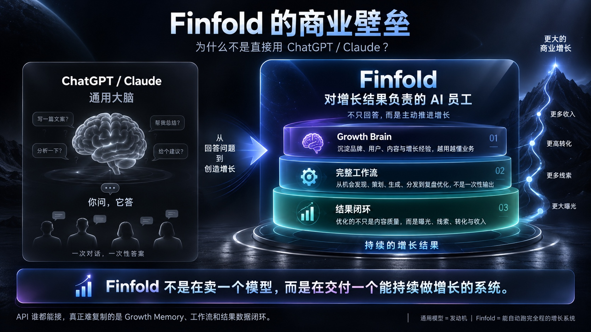
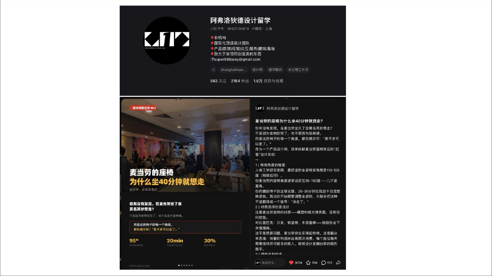

94%
跨渠道复用营销人确实在跨平台复用内容——但几乎全靠手工改写。

01 / 12 · ORIGIN · 2026
X 要锋利观点，小红书要从痛点开头，公众号要长文信任。同一条产品更新，我曾手动改写七遍，篇篇还透着 AI 味——真正的成本不是「写」，是「翻译」。于是我做了 Finfold：一位懂你的品牌、也懂每个平台规矩的增长数字员工，发布之后还替你看哪条真的有效。
体验真实产品 →02 / THE REAL COST
X 要短，小红书要痛点，LinkedIn 要正式，Reddit 一眼闻得出广告味，公众号还要排版。语气、结构、尺寸、社区禁忌——每个平台都是一门语言，而小团队手里往往只有一个人。
94%
跨渠道复用营销人确实在跨平台复用内容——但几乎全靠手工改写。
10–20h
每周损耗多平台改写与尺寸适配，每周吃掉一个工作日的一半。
49.4%
同文多发同一段内容被直接复制粘贴到多个平台，效果各自听天由命。
0
专职运营独立开发者与出海团队，请不起内容团队。
数据口径：Finfold BP（2026.09 路演版）引用的行业研究，用于说明问题量级，非本产品实测。
03 / RESEARCH
这轮调研没有大样本：摊开自己的发布过程、逐平台拆任务、再对照三类现成方案——所有证据指向同一条完整路径。
我拿同一条更新逐个平台改写，记下哪些步骤反复出现，哪些事实必须锁住，哪些表达只能交给人判断。这一步把问题落在平台翻译和事实一致上。
我为国内外 14 个平台整理内容目标、阅读节奏、图片尺寸和发布禁忌。它直接催生了独立内容卡、平台评分、单卡重试和九种图片尺寸。
通用聊天擅长起草，模板生成器擅长固定格式，运营套件擅长排期。Finfold 选择把品牌记忆、平台生成、视觉资产和表现回流接在一起。
我在 2026 Link-X Demo Day 展示真实官网和创作台。照片能证明展示发生过，也能证明产品已经离开设计稿。它不能代替用户访谈结果。
当前证据来自自我观察、平台任务分析、替代方案拆解和公开演示。真实付费用户的长期留存与规模化访谈仍然缺席。下一轮会用任务访谈和一周内容日记，追踪用户从素材进入、修改到发布回流的整条路径。


04 / DECISION
开发最快。但用户生成完还得自己分平台、比较、编辑、保存，七个标签页一个没少。
结果稳定，却只会换格式。平台的语气、互动方式和禁忌，仍靠用户自己懂。
左栏粘贴素材，中栏选平台，右栏生成可发布的 Platform Content Kit。内容包包含标题和正文，也会给出视觉与发布建议。代价是信息密度更高，最新一轮专门修了窄屏溢出。
05 / PRODUCT LOOP
给它一条业务信号：先带上品牌记忆，再套平台规则，产出可直接发布的文案与配图；人确认后发布，真实结果再回流成下一轮的上下文。一个增长闭环，不是六个孤立按钮。
更新 · 反馈 · 长文 · 图片
语气 · 受众 · 禁用词 · 范文
14 平台格式 · 尺寸 · 禁忌
文案 + 封面 + 配图 + 尺寸
编辑 · 润色 · 导出 · 发布
链接 · 指标 · 下一步建议
06 / 14 PLATFORMS
平台原生度由具体行为决定。X 看第一行能不能留人，小红书看标题和封面能不能让人停下，公众号承担完整解释，Reddit 要求先给社区价值。Finfold 把这些差异写成规则，用户不用每次从头猜。
锋利观点、创始人故事、发布势能与公开迭代。
痛点开头、情感佐证、值得收藏的笔记与好奇感。
深度解释价值，承接长期信任与私域沉淀。
项目进展、温暖信任与轻量转化。
少吹概念，多讲流程、成本和团队效率。
讲清产品、受众、收益和行动入口。
07 / SYSTEM & MOAT

我愿意下注的是这一层。Identity Memory 记住你是谁、为谁、怎么说话；Brand Rules 把定位、语气和禁用词写进引擎，每次生成都强制执行；发布后的真实表现，再变回下一轮生成的上下文。用户改过什么、哪条被判定有效、哪个平台带来点击，都不能只躺在报表里。

MODEL-AGNOSTIC · OpenAI / DeepSeek / GLM 可替换——不被任何单一模型供应商锁死。
合规进入了生成路径。Advertising & E-commerce、Medical & Health、Legal、Finance 四个行业规则包，会检查极限词、疗效承诺和收益保证。风险内容在生成阶段就会被拦下。
08 / LIVE PRODUCT
从粘贴一条真实产品更新，到多平台内容包生成、人工确认和结果回流——下面是可运行的产品，不是概念视频。

左栏可以粘贴 launch note、产品链接或截图，中栏选择平台，右栏生成可发布的内容包。小红书的原生轮播和 X 的观点钩子各有自己的结构与视觉尺寸。

把你的定位、受众、语气、禁用词和范例记在一处。Finfold 每次生成前都会带上这些信息，内容会越来越接近你的表达。

用户可以让它配置品牌规则、学习创作者风格，或诊断小红书账号。配合 Agents 与 GitHub，对话会进入可见、可追踪的任务。

BP 里记录的真实案例：一个设计留学账号交给 Finfold 打理，单条笔记拿到 3078 赞、706 收藏、172 评论；账号 2164 粉丝、1.5 万获赞与收藏。数字来自公开账号与帖子，属个案，不代表普遍效果。
官网、公开创作台和定价页已经统一到 v0.9.0-beta.3 的产品叙事。访客能看见平台选择、品牌记忆、输出结构和登录边界。
这些信息证明当前公开产品的能力和状态。真实用户量、留存、收入和增长效果仍需单独研究。
09 / BUSINESS DESIGN
产品之外，我把市场楔子、定价结构和竞争位置一并想清楚——这三件事决定产品往哪长。
MARKET · 市场楔子
内容营销软件市场 · 2025→2030 · CAGR 18.5%
PRICING · 点数制定价
按用量计点——把模型成本翻译成用户能算清的账。finfold.app 定价页 · 2026.08.19
COMPETITION · 竞争位置
| 能力 | CHATGPT / CLAUDE | BUFFER / HOOTSUITE | 稿定设计 | FINFOLD |
|---|---|---|---|---|
| 品牌记忆 | △ | — | △ | ● |
| 14 平台规则 | △ | △ | ● | ● |
| 资产与尺寸 | — | △ | ● | ● |
| 发布与复盘 | — | — | △ | ● |
| 数字员工式工作流 | — | — | △ | ● |
● 具备 · △ 部分 · — 无。对照来自 BP（2026.09）引用的行业研究。
10 / THE MISTAKE
第一版 Dashboard 上有“42 待发布、11 待审核、18 已排期”。看起来像个成熟 SaaS。可这些数字来自演示数据。那张图骗不了评委，更骗不了我自己。后来我拿掉 silent mock fallback。模型失败就明确失败，没数据就老老实实显示没数据。
“AI 产品的专业感来自诚实的失败、受控的影响，以及一条清楚的恢复路径。”
DESIGN CHANGE · 独立输出状态 / 单卡重试 / 显式错误 / 无静默假数据
11 / MY ROLE
作为产品负责人，我端到端负责问题定义、研究框架、信息架构、产品机制、交互与设计系统，也负责 Landing Page、商业化叙事和现场展示；同时跟进生成路径、权限、计费与构建验证，让每个设计判断都能在真实代码里成立。
这个项目让我练得最扎实的，是判断 AI 何时可以行动，人何时必须确认，合规怎样进入生成路径，以及数据不足时怎样把边界说清楚。
12 / TRY IT
把一条真实 launch note 粘进去，看 14 个平台怎样各自组织文字和视觉。工作台已经上线。